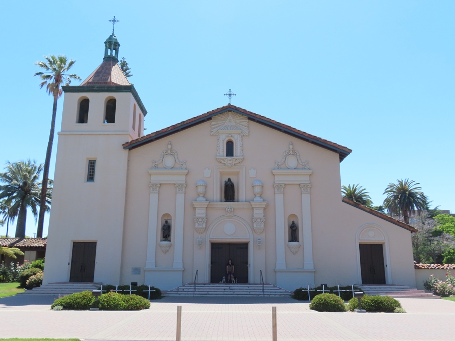

<--Previous Up Next-->

On the campus of Santa Clara University, California's oldest. This mission was founded nearby in 1777, moved here in 1828, burned in 1922 and subequently restored.
Halley Beagle Wallace Beagle